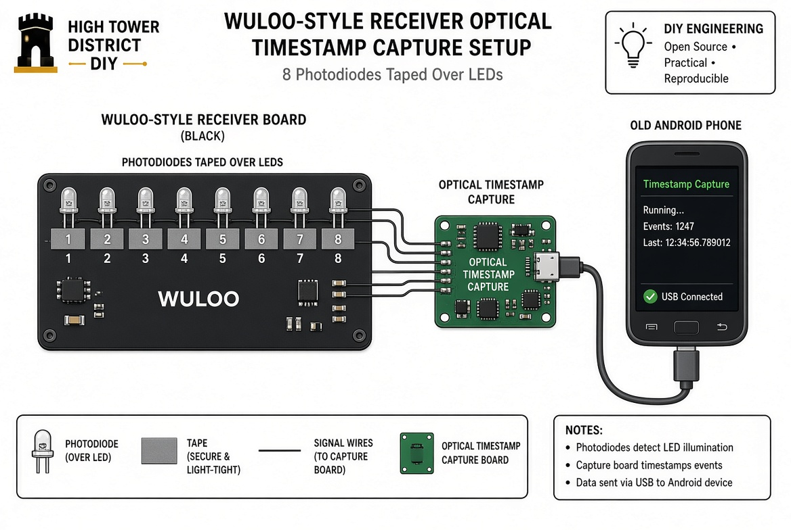

1. Design Goals (Non-Negotiable)
- Non-invasive — photodiodes held by electrical tape only. No soldering into the Wuloo board.
- Eight independent channels — one photodiode per zone LED or indicator.
- Consistent, low-jitter edge — optical conversion is the only variable latency source.
- Millisecond (or better) timestamps — free-running local oscillator, latched on every edge.
- USB-C only — plug into any recent Android phone (including a dead phone with working USB-C and Wi-Fi).
- Internet via Wi-Fi — phone acts as the bridge. No cellular plan required.
- Lowest practical cost — commodity photodiodes, a small MCU with native USB, and an old phone.
2. System Architecture
Optical Front-End
8 photodiodes (or phototransistors) positioned over the Wuloo LEDs. Each is light-shielded with black electrical tape so only the target LED illuminates it.
Signal Conditioning
Each photodiode + resistor forms a simple voltage swing. Optional Schmitt-trigger inverter (74HC14 or MCU internal) cleans the edge. Result is a digital 0/3.3 V pulse.
Timestamp Capture MCU
A small microcontroller with a free-running 1 ms (or 100 µs) timer. On every rising or falling edge from any of the 8 channels it latches the current timer value and queues a compact packet: {channel, timestamp, edge}.
USB-C Interface
MCU presents itself as a USB serial device (CDC ACM) or simple HID. Android phone enumerates it and opens a serial port or bulk endpoint.
Android Bridge
A minimal app (or Termux + Python / existing serial-forward tools) reads the packets and pushes them over Wi-Fi (MQTT, WebSocket, or HTTP POST) to any local or remote listener.
3. Optical Front-End (8 Channels)
Recommended sensors
- • BPW34 photodiode (clear, fast, cheap) — preferred for consistency
- • TEMT6000 or similar ambient-light phototransistor modules (already have resistor)
- • Generic 5 mm clear phototransistors (very low cost, slightly more variation)
Per-channel circuit (simplest reliable form)
VCC (3.3 V) │ ├── 10 kΩ ── node A ── to MCU GPIO (or Schmitt input) │ Photodiode (cathode to node A, anode to GND) │ GND
When the LED lights, photocurrent pulls node A toward ground → clean falling edge. Reverse the orientation or add an inverter if you prefer rising edges. A 74HC14 Schmitt stage after node A removes any remaining noise.
Mechanical mounting (electrical tape method)
- Identify which LEDs (or display segments) light for each of the up to 8 transmitter IDs by triggering sensors one at a time.
- Place a photodiode directly over each chosen LED, active face down.
- Cover the photodiode + LED with a small square of black electrical tape. Press firmly so ambient light cannot reach the sensor.
- Route the thin signal wires (30–28 AWG) away from the board edge and secure with additional tape so they do not pull the photodiodes off.
- Leave a short service loop so the Wuloo case can still close or the board can be re-seated.
4. Capture MCU & Timestamp Logic
Recommended MCU
ESP32-S3 (native USB, dual-core, cheap modules with USB-C already on board) or any STM32 with USB Device support. ESP32-S3 is the lowest-friction choice for a one-off.
Timer
Free-running 32-bit or 64-bit timer clocked from a crystal or the MCU’s high-accuracy internal oscillator. Configure for 1 ms ticks as the baseline (easy math). Optionally run at 100 µs or 10 µs resolution if the crystal is good enough and you want finer inter-sensor deltas later.
Capture state machine (per channel)
on rising or falling edge of channel N:
t = current_timer_count
enqueue packet {
channel : N (0-7)
timestamp : t
edge : 0=falling / 1=rising
sequence : ++seq
}
Use interrupt-driven edge detection (GPIO interrupt or EXTI) so the CPU is not polling. The queue is drained by a low-priority task that formats USB packets.
USB packet format (simple serial)
ASCII line (easy to parse on phone): "E,3,1245678,1\n" meaning: Event, channel 3, timestamp 1245678 ms, rising edge or binary for higher rate: [0xAA][channel][ts_lo][ts_mid][ts_hi][edge][seq][0x55]
5. USB-C to Android Phone Path
Hardware
- • MCU board with native USB Device (ESP32-S3 DevKit with USB-C is ideal).
- • Short USB-C cable (or USB-C to USB-C).
- • Any Android phone that supports USB OTG / USB host for serial devices (almost all modern phones do).
Android side (lowest-effort options)
- Termux + pyserial — install Termux, install Python, open the USB serial device, read lines, publish to MQTT or HTTP.
- Serial USB Terminal + automation — existing Play Store apps can open the port and forward via Tasker or a small companion script.
- Minimal custom app — one Activity that requests USB permission, opens the CDC ACM device, and pushes each line to a WebSocket or MQTT broker over Wi-Fi.
The phone only needs Wi-Fi. It can be a completely “dead” handset with no SIM and no cellular service. Power it from a wall adapter or power bank if you want continuous operation.
6. Getting the Data onto the Internet
Once the packets are on the phone, any of the following work:
- • MQTT client → local Mosquitto or public broker → X-410 / Home Assistant / custom logger
- • WebSocket to a small Node or Python server on the local network
- • HTTP POST of JSON batches every few seconds
- • Direct write to a Google Sheet / InfluxDB / simple PHP endpoint if you want zero local infrastructure
For the canal / High Tower use case the cleanest path is MQTT → local broker → X-410 logic or a small Python process that computes inter-sensor deltas and triggers relays.
7. Approximate Bill of Materials (one unit)
| Item | Qty | Notes | Est. cost |
|---|---|---|---|
| BPW34 or equivalent photodiode | 8 | clear | $4–8 |
| 10 kΩ resistors | 8 | 1/8 W | $1 |
| 74HC14 (optional Schmitt) | 1 | 6 inverters | $0.50 |
| ESP32-S3 DevKit (USB-C) | 1 | native USB | $5–12 |
| Thin wire (28–30 AWG) | 1 m | 8 channels | $1 |
| Black electrical tape | 1 roll | light shield | $2 |
| USB-C cable | 1 | short | $3 |
| Old Android phone | 1 | USB-C + Wi-Fi | $0–30 |
| Total (excluding phone) | ≈ $15–30 |
8. Construction Sequence
- Open the Wuloo receiver and identify the LEDs that respond to each transmitter ID.
- Build the 8-channel front-end on a small protoboard or the ESP32-S3 breadboard area (photodiode + 10 kΩ per channel).
- Flash the ESP32-S3 with the edge-capture + USB-serial firmware (Arduino or ESP-IDF).
- Verify that edges appear in a serial terminal when you shine a flashlight on each photodiode.
- Tape each photodiode over its target LED, black-tape the light path, and route the wires.
- Plug the USB-C cable into the phone. Confirm the serial device enumerates.
- Run the Android forwarder (Termux script or minimal app) and confirm packets appear on the network.
- Trigger real Wuloo sensors and verify channel numbers and relative timestamps match expected zones and order.
9. Design Purity Notes
The optical edge is generated without loading or modifying the Wuloo circuit. The timestamp clock is free-running and independent of any host poll or frame rate. The Android phone is only a USB host and Wi-Fi radio — it does not participate in the timing path. The result is a clean separation: light → edge → absolute time → network.
The same capture board can later be pointed at pinball LEDs, other indicator lamps, or any optical source. The interface remains “light in, timestamped event out.”